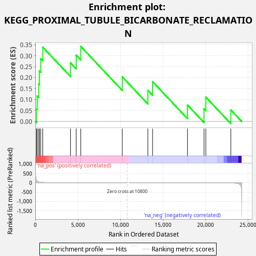
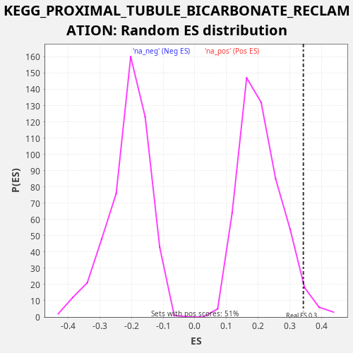

| Dataset | LabCL |
| Phenotype | NoPhenotypeAvailable |
| Upregulated in class | na_pos |
| GeneSet | KEGG_PROXIMAL_TUBULE_BICARBONATE_RECLAMATION |
| Enrichment Score (ES) | 0.3423828 |
| Normalized Enrichment Score (NES) | 1.6414353 |
| Nominal p-value | 0.03307393 |
| FDR q-value | 0.18241227 |
| FWER p-Value | 0.943 |

| SYMBOL | RANK IN GENE LIST | RANK METRIC SCORE | RUNNING ES | CORE ENRICHMENT | |
|---|---|---|---|---|---|
| 1 | ATP1A4 | 154 | 120.776 | 0.0561 | Yes |
| 2 | SLC4A4 | 215 | 89.586 | 0.1162 | Yes |
| 3 | GLS | 409 | 40.325 | 0.1707 | Yes |
| 4 | ATP1B1 | 487 | 32.124 | 0.2300 | Yes |
| 5 | ATP1A2 | 643 | 22.451 | 0.2861 | Yes |
| 6 | GLUD2 | 875 | 14.675 | 0.3391 | Yes |
| 7 | PCK2 | 4133 | 0.523 | 0.2672 | Yes |
| 8 | ATP1B3 | 4805 | 0.328 | 0.3020 | Yes |
| 9 | SLC25A10 | 5341 | 0.221 | 0.3424 | Yes |
| 10 | ATP1A1 | 10222 | 0.001 | 0.2035 | No |
| 11 | MDH1 | 13229 | -0.014 | 0.1419 | No |
| 12 | AQP1 | 13780 | -0.024 | 0.1817 | No |
| 13 | CA2 | 17886 | -0.291 | 0.0748 | No |
| 14 | GLS2 | 19829 | -0.790 | 0.0571 | No |
| 15 | ATP1A3 | 20042 | -0.882 | 0.1109 | No |
| 16 | GLUD1 | 22979 | -9.463 | 0.0522 | No |

{kind=link}
{kind=link}